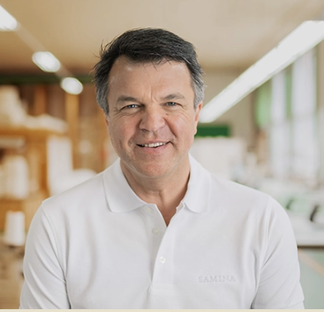

Bryan Johnson investiert über 200.000 Euro pro Jahr, um sein biologisches Alter zu verlangsamen. Peter Attia veröffentlicht Bestseller über Lifespan und Healthspan. Andrew Huberman bringt Millionen Menschen dazu, ihre Morgenroutine umzubauen. Longevity ist 2026 endgültig im Mainstream angekommen. Allein in der DACH-Region suchen jeden Monat über 33.000 Menschen nach diesem Begriff. Die Frage ist nur: Funktioniert das wirklich, was wir uns da angewöhnen? Oder übersehen wir den entscheidenden Hebel?
Schlafforscher haben dazu eine klare Antwort. Prof. W. C. Dement, der Vater der modernen Schlafmedizin in Stanford, fasste schon 1998 zusammen: Rund 90 Prozent unserer Gesundheit und Langlebigkeit entscheiden sich nachts. Nicht im Gym. Nicht in der Küche. Im Bett. Dieser Artikel zeigt dir, warum Schlaf der unterschätzte Longevity-Hebel ist, was guten Schlaf wirklich auszeichnet, was ihn dir raubt und wie du in einer einzigen Nacht den größten Anti-Aging-Effekt mitnimmst, den die Wissenschaft kennt.
Das Wichtigste auf einen Blick
- Rund 90 % der Gesundheits- und Regenerationsleistung beginnen im Schlaf (Prof. W. C. Dement, Stanford, 1998).
- Eine Studie an 172.321 Erwachsenen unter Beteiligung der Harvard Medical School zeigt: Wer fünf gute Schlafgewohnheiten erfüllt, verlängert seine statistische Lebenserwartung um 4,7 Jahre (Männer) bzw. 2,4 Jahre (Frauen). Die Gesamtmortalität sinkt um 30 % (ACC, 2023).
- Über 80 % der nächtlichen Regenerationsqualität hängen laut Prof. Amann-Jennson vom Schlafplatz ab (Buch Einfach gesund schlafen, Irisiana 2024).
- Du verbringst rund 120 Tage pro Jahr im Bett. Das ist die größte Einzelinvestition, die du in deine Gesundheit machen kannst.
Longevity heißt übersetzt schlicht "Langlebigkeit". Doch der Begriff meint heute mehr als nur die reine Lebensdauer. In der modernen Wissenschaft unterscheidet man zwei Größen: die Lifespan (wie alt du wirst) und die Healthspan (wie viele Jahre du davon gesund, wach und leistungsfähig erlebst). Die medizinische Lebensverlängerung der letzten Jahrzehnte hat zwar die Lifespan deutlich erhöht. Doch der Preis ist hoch, wenn die letzten 15 Jahre im Pflegeheim verbracht werden.
Prof. Günther W. Amann-Jennson, Schlafforscher und Erfinder des SAMINA Schlafsystems, formuliert es im Buch Einfach gesund schlafen deutlich: Bereits in der Lebensmitte sind nur noch etwa fünf Prozent der Menschen kerngesund. Im Alter wird das Bild noch dramatischer. Wer länger leben will, ohne früh in Herz-Kreislauf-Erkrankungen, Diabetes oder neurodegenerative Krankheiten zu rutschen, braucht beide Werte parallel: mehr Jahre und mehr Qualität.
Genau hier setzt der heutige Longevity-Trend an. Statt nur das Lebensende nach hinten zu schieben, geht es darum, biologisch jung zu bleiben. Bewegung, Ernährung, Stressreduktion, Tracker, Cold Plunge, Supplements, alles wichtig. Doch der Hebel, der alles andere multipliziert, wird seit Jahrzehnten unterschätzt. Es ist der Schlaf.
Wer seinen Körper optimieren will, optimiert oft alles außer dem, was am längsten wirkt. Ein Smoothie wirkt etwa 30 Minuten. Ein gutes Workout hält dich rund 24 Stunden im Recovery-Modus. Ein Supplement greift punktuell. Schlaf läuft jede Nacht acht Stunden lang systemisch durch deinen ganzen Körper. Tiefschlaf wirkt direkt auf dein Hormonsystem. Regeneration läuft nicht punktuell, sondern in Wellen aus Tiefschlaf, REM und Restoration.
Diese Zahl ist kein Werbeslogan, sondern geht zurück auf jahrzehntelange Stanford-Schlafforschung von Prof. William C. Dement. Sein Forschungsfeld wurde später zur Grundlage moderner Schlafmedizin. Auch der Berkeley-Schlafforscher Matthew Walker bestätigt in Why We Sleep (2017): Kein anderer Hebel beeinflusst Gesundheit und Lebenserwartung so umfassend wie Schlaf. Wer in dieser Logik denkt, sieht plötzlich die Diskrepanz: Wir investieren Stunden im Gym, optimieren jede Makro-Verteilung, tracken HRV und Schritte. Und liegen dann acht Stunden lang auf einer Unterlage, die wir uns vor zwölf Jahren in einem Möbelhaus gekauft haben.
Genau diese Diskrepanz erklärt, warum so viele "gut trainierte" Menschen mit 50 trotzdem chronisch erschöpft sind. Der Hebel ist da. Er ist nur in keiner App.
Wer sich in der internationalen Longevity-Szene umsieht, landet schnell bei drei Namen. Bryan Johnson, der US-Unternehmer, der sein "Blueprint"-Protokoll dokumentiert und damit sein biologisches Alter messbar reduziert. Peter Attia, der Mediziner und Autor des Bestsellers Outlive (Harmony Books 2023). Andrew Huberman, der Stanford-Neurowissenschaftler mit einem der größten Gesundheits-Podcasts der Welt. Dazu kommen die Blue Zones, jene fünf Regionen weltweit (Okinawa, Sardinien, Ikaria, Nicoya, Loma Linda), in denen überdurchschnittlich viele Menschen gesund 100 Jahre alt werden — dokumentiert von Forscher Dan Buettner für National Geographic.
So unterschiedlich diese Quellen sind: Eine Sache haben sie alle gemeinsam. Schlaf steht ganz oben auf ihrer Prioritätenliste. Bryan Johnson schläft jede Nacht zur exakt selben Zeit ein. Andrew Huberman widmet ein ganzes Kapitel seines Protokolls dem Thema. In den Blue Zones wird früh schlafen gegangen, in dunklen Räumen, mit klaren Rhythmen.
Unsere Beobachtung: Während ein 200.000-Euro-Longevity-Protokoll für die meisten Menschen unerreichbar ist, kostet die wichtigste Stellschraube nichts. Wer fünf Schlafgewohnheiten konsequent umsetzt, kommt statistisch näher an Blue-Zones-Werte als jeder Supplement-Stack.
Das macht das Thema demokratisch. Du brauchst keine Privatklinik in Kalifornien. Du brauchst eine Nacht, die deinen Körper tatsächlich regenerieren lässt.
📅 Live-Webinar mit Prof. Amann-Jennson · Mittwoch, 10. Juni 2026, 19:00 Uhr
"Longevity. Shaped by Sleep." Was die Schlafforschung 2026 über gesundes Altern weiß und wie du den größten Hebel sofort umlegst.
Die wichtigste Studie der letzten Jahre stammt aus dem American College of Cardiology Meeting 2023. Forscher unter Beteiligung der Harvard Medical School analysierten Daten von 172.321 Erwachsenen aus dem US National Health Interview Survey. Dabei identifizierten sie fünf Schlafverhaltensweisen, die zusammen messbar die Lebenserwartung verlängern (ACC, 2023). Prof. Amann-Jennson zitiert exakt dieselbe Logik im Nachwort seines Buchs Einfach gesund schlafen (Irisiana 2024).
Die fünf Faktoren sind verblüffend einfach:
| # | Faktor | Worauf es ankommt |
|---|---|---|
| 1 | Schlafdauer | 7 bis 8 Stunden pro Nacht, idealerweise 7,5 Stunden |
| 2 | Einschlafen | Problemlos und leicht, an mindestens 5 von 7 Tagen |
| 3 | Durchschlafen | Ohne längere Wachphasen, an mindestens 5 von 7 Tagen |
| 4 | Aufwachen | Erholt und ausgeruht, an mindestens 5 von 7 Tagen |
| 5 | Schlafmittel | Konsequenter Verzicht zum Einschlafen |
Kein Punkt davon ist exotisch. Keiner kostet Geld. Trotzdem erfüllt nach den Studiendaten nur ein Bruchteil der Erwachsenen alle fünf gleichzeitig. Das ist nicht nur eine traurige Zahl, das ist auch eine riesige Chance. Wer hier nachzieht, kann nach diesen Untersuchungen mit messbarer Wirkung rechnen.
Wenn du schläfst, läuft dein Körper nicht im Standby. Er ist im Hochleistungs-Reparaturmodus. In drei bis fünf Schlafzyklen pro Nacht wechseln sich Leichtschlaf, Tiefschlaf und REM-Schlaf ab. Jede Phase hat eine Funktion.
Im Tiefschlaf (ca. 15 bis 25 % deiner Nacht) schüttet die Hirnanhangdrüse das Wachstumshormon HGH aus. Es sorgt für Zellerneuerung, Muskelaufbau und die Reparatur kleiner Gewebeschäden. Wer fragt, wie viel Tiefschlaf normal ist: Bei einem Erwachsenen sind es etwa 1,5 bis 2 Stunden pro Nacht, je nach Alter und Schlafqualität. Vor allem in der ersten Nachthälfte erreichst du die tiefsten Stadien.
Im REM-Schlaf verarbeitet dein Gehirn Emotionen, konsolidiert Gedächtnis und Lerninhalte. Wer den REM-Schlaf systematisch verkürzt (etwa durch Alkohol am Abend), schwächt seine Stressregulation und sein Erinnerungsvermögen messbar.
Eine der wichtigsten Entdeckungen der letzten Jahre betrifft das glymphatische System. Es ist das körpereigene Reinigungssystem des Gehirns, ähnlich dem Lymphsystem des Körpers. Die wegweisende Studie von Xie et al. (Science, 2013) zeigte erstmals: Während des Tiefschlafs erweitern sich die Zellzwischenräume im Gehirn um bis zu 60 %, und Hirnflüssigkeit spült Stoffwechselabfälle heraus, darunter auch Beta-Amyloid. Diese Reinigung läuft fast ausschließlich im Schlaf. Störungen des glymphatischen Systems werden in der Forschung mit erhöhtem Risiko für neurodegenerative Erkrankungen wie Alzheimer in Verbindung gebracht (Amann-Jennson, Buch Einfach gesund schlafen, Irisiana 2024, Kap. 8).
Zur selben Zeit wirkt Melatonin, das Schlafhormon, als eines der stärksten körpereigenen Antioxidantien. Es bindet freie Radikale und wirkt damit auf Zellebene gegen oxidativen Stress. Das ist der eigentliche Anti-Aging-Effekt, den keine Creme der Welt nachbauen kann.
Citation Capsule: Das glymphatische System des Gehirns spült während des Tiefschlafs Stoffwechselabfälle heraus, darunter Beta-Amyloid. Diese Reinigung läuft fast ausschließlich im Schlaf, weshalb chronischer Tiefschlafmangel in der Forschung mit einem erhöhten Risiko für neurodegenerative Prozesse verbunden wird. Quelle: Amann-Jennson, Einfach gesund schlafen, 2024, Kap. 8.
Wie gesund schläfst du wirklich? Jetzt zuhause messen.
Mit der SAMINA Schlafanalyse erhältst du eine medizinisch zertifizierte Auswertung deiner Schlafphasen, Atmung und Regeneration. Bequem im eigenen Bett.
Wenn 90 % deiner Regeneration im Schlaf entstehen, lohnt die Frage, was sie verhindert. Die Forschung trennt hier sauber zwischen Lifestyle-Faktoren und körperlich-physikalischen Faktoren. Beide spielen zusammen.
Lifestyle-Faktoren:
Körperlich-physikalische Faktoren:
Was wir aus 40 Jahren SAMINA-Schlafcoaching beobachten: Viele unserer Kund:innen kommen mit Schlafproblemen, an denen sie jahrelang gearbeitet haben. Diese Kund:innen haben Ernährung, Sport, Achtsamkeit, alles optimiert. Geblieben ist die müde Aufwach-Erfahrung. In neun von zehn Fällen liegt das Problem nicht im Verhalten, sondern in einem physikalisch unpassenden Schlafplatz.
Du verbringst 120 Tage pro Jahr im Bett. Das sind etwa ein Drittel deines Lebens. Trotzdem geben die meisten Menschen für ihre Liegefläche weniger aus als für ihr Auto, ihr Smartphone oder ihre nächste Urlaubsreise. Dabei läuft jede Nacht eine 8-Stunden-Behandlung. 365 mal pro Jahr.
Prof. Amann-Jennson bringt es in seinem Buch Einfach gesund schlafen (Irisiana 2024) auf den Punkt: Über 80 % der nächtlichen Schlaf- und Regenerationsqualität hängen vom Schlafplatz ab. Du kannst tagsüber alles richtig machen. Wenn du aber 8 Stunden auf einer Unterlage liegst, die deinen Körper nicht in echte Tiefenentspannung lässt, leidet die nächtliche Regeneration. Konsequent über Jahrzehnte gerechnet ist das ein gewaltiger Multiplikator. In beide Richtungen.
Vier physikalische Faktoren entscheiden über die Qualität deines Schlafplatzes:
Wer hier sauber investiert, betreibt Anti-Aging im wörtlichsten Sinn. Nicht für eine Sitzung. Für 2.920 Stunden im Jahr.

Persönliches Schlafcoaching in einer SAMINA Filiale
Individuelle Beratung und das BioSleep4™ System vor Ort testen. In 13 Filialen im DACH-Raum.
SAMINA ist ein österreichisches Familienunternehmen, das seit 1989 zwei Bereiche miteinander verbindet: hochwertige Schlafsysteme aus Naturmaterialien und ein wachsendes Portfolio an Longevity- und Recovery-Technologie. Beides zielt auf dasselbe Prinzip: maximale Regeneration als Fundament für ein langes, gesundes Leben — nachts im Bett und tagsüber in der Filiale.
Ein SAMINA Schlafsystem ist kein einzelnes Möbelstück, sondern ein vollständig aufeinander abgestimmtes System aus orthopädischem Rahmen, mehrlagiger Naturmatratze, Erdungsauflage, Nackenstützkissen und Bio-Bettdecken. Das gesamte System wird in Vorarlberg in den österreichischen Alpen handgefertigt und ist konsequent metallfrei. Prof. Amann-Jennson hat darin über vier Jahrzehnte das Konzept des Bioenergetischen Schlafs® entwickelt — alle vier physikalischen Faktoren eines gesunden Schlafplatzes wissenschaftlich aufeinander abgestimmt.
Konkret besteht ein SAMINA Schlafsystem aus diesen Komponenten:
→ Alle Details, Konfigurationen und Beratungstermine auf samina.com.
Was nachts im Bett beginnt, lässt sich tagsüber gezielt verstärken. In den SAMINA Filialen findest du unter der Marke SAMINA Recovery neun aufeinander abgestimmte Anwendungen aus der modernen Longevity-Forschung — die größte Bandbreite an Recovery-Technologie im DACH-Raum unter einem Dach:
| Modul | Anwendung | Wirkmechanismus |
|---|---|---|
| COOL | Kältekammer / Kryotherapie | Aktiviert Stoffwechsel, reduziert Entzündung |
| CHARGE | Nah-Infrarot-Rotlicht (NIRF) | Stimuliert Zellenergie (ATP), beschleunigt Regeneration |
| TRANSFORM | Massagesessel mit Licht- und Klangimpulsen | Tiefe Neuro-Relaxation, Parasympathikus-Aktivierung |
| FLOW | Wechseldruck-Massage | Lymphdrainage, Mikrozirkulation, Sport-Recovery |
| BOOST | IHHT-Sauerstofftraining | Höhentraining-Effekt, Mitochondrien-Aktivierung |
| MOVE | Faszientraining | Mobilität, Beweglichkeit, Schmerzreduktion |
| BODYSCAN | 3D-Körperanalyse | Misst sichtbare Veränderungen über Zeit |
| HRV | Herzratenvariabilitäts-Messung | Biofeedback zu Stressregulation und Erholung |
| COLD PLASMA (NEU) | „Full Body Charger" (exklusiv in Frastanz) | Energetische Zellaufladung |
Die Module sind so konzipiert, dass sie sich kombinieren lassen. Wer regelmäßig in der Filiale trainiert und nachts auf einem SAMINA Schlafsystem regeneriert, deckt damit beide Hebel ab — den größten (Schlaf) und seine tägliche Verstärkung.
→ Alle Anwendungen, Standorte und Termine auf samina-recovery.com.
Im Buch Einfach gesund schlafen berichtet Prof. Amann-Jennson von Prof. Karl Hecht, seinem langjährigen Wissenschaftspartner. Hecht nutzte über Jahrzehnte das SAMINA Schlaf-Gesund-Konzept und schlief geerdet und schräg. An seinem 90. Geburtstag lud er alle Gäste zu seinem 100. ein. Seine persönliche Hochrechnung über den Effekt seiner nächtlichen Routine: rund 10 Jahre Lebensverlängerung gegenüber dem statistischen Schnitt. Hecht erreichte tatsächlich ein Alter von 98 Jahren, bevor er nach einem Unfall verstarb.
Wichtig zur Einordnung: Diese Hochrechnung von Prof. Hecht beruht auf eigener Beobachtung und ist keine klinische Garantie. Sie illustriert die Größenordnung, in der erfahrene Forscher den Effekt eines optimierten Schlafplatzes verorten.
SAMINA versteht sich daher nicht als Bettenfirma allein, sondern als ganzheitlicher Longevity-Anbieter im DACH-Raum: Bett-System für die Nacht, Recovery-Technologie für den Tag. First Mover, seit 1989.
Was kannst du heute Nacht konkret tun? Diese fünf Schritte fasst Prof. Amann-Jennson im Buch als Schlaf-Gesund-Programm zusammen. Die fünf Punkte greifen ineinander und entfalten in Summe die größte Wirkung.
Aus der Begleitung tausender SAMINA-Kund:innen beobachten wir: Wer drei dieser fünf Punkte konsequent umsetzt, berichtet nach 8 bis 12 Wochen über messbar erholteres Aufwachen und stabilere Tagesenergie.
Ein gesunder Erwachsener erreicht etwa 1,5 bis 2 Stunden Tiefschlaf, was 15 bis 25 % der gesamten Schlafdauer entspricht. Vor allem in der ersten Nachthälfte erreichst du die tiefsten Stadien. Mit zunehmendem Alter sinkt der natürliche Tiefschlafanteil. Eine optimierte Liegefläche und Schrägschlaftechnik können diesen Anteil nach Beobachtungen aus der Schlafforschung unterstützen.
Die meisten Erwachsenen brauchen 7 bis 8 Stunden Schlaf pro Nacht. Prof. Amann-Jennson nennt 7,5 Stunden als optimale Mitte. Wichtig ist nicht nur die Dauer, sondern auch die Qualität: leichtes Einschlafen, durchgehender Schlaf und erholtes Aufwachen. Wer dauerhaft unter 6 Stunden schläft, erhöht laut Studienlage das Risiko für Herz-Kreislauf- und Stoffwechselerkrankungen messbar.
Longevity bedeutet wörtlich Langlebigkeit. In der modernen Wissenschaft meint der Begriff allerdings nicht nur lange leben (Lifespan), sondern gesund alt werden (Healthspan). Ziel ist es, biologisch jung zu bleiben und chronischen Krankheiten möglichst spät und kurz zu begegnen.
Bryan Johnson ist Jahrgang 1977. Sein "Blueprint"-Protokoll umfasst rund 100 Maßnahmen pro Tag. Schlaf gehört zu den drei Säulen, neben Ernährung und Bewegung. Er schläft jede Nacht zur exakt selben Zeit, mehrere Stunden vor Mitternacht, in einem komplett dunklen, kühlen Raum. Seine eigenen Tracking-Daten zeigen, dass Schlaf für ihn der wichtigste Recovery-Faktor ist.
Nach Beobachtungen aus der Schrägschlaf-Forschung (u. a. Dr. Singer und Dr. Grismaijer, Andrew Fletcher, sowie Prof. Amann-Jennson) kann eine sanfte Schräglage des Körpers von 3,5° die nächtliche Mikrozirkulation und die Drainage des Gehirns unterstützen. Klinische Garantien gibt es dafür nicht. Studienergebnisse und Erfahrungsberichte weisen aber konsistent in dieselbe Richtung.
Die aktuelle biologische Obergrenze wird in der Wissenschaft bei etwa 120 bis 125 Jahren verortet. Die nachgewiesen älteste Person war Jeanne Calment mit 122 Jahren. Realistisch erreichen heute in den Blue Zones überdurchschnittlich viele Menschen ein gesundes Alter über 100. Schlaf ist in allen fünf Blue Zones ein dokumentierter Schlüsselfaktor.
Das glymphatische System ist das Reinigungssystem des Gehirns. Während des Tiefschlafs erweitern sich die Zellzwischenräume, und Hirnflüssigkeit spült Stoffwechselabfälle wie Beta-Amyloid aus. Dieser Prozess läuft fast ausschließlich nachts. Chronische Tiefschlafdefizite werden in der Forschung mit erhöhtem Risiko für neurodegenerative Erkrankungen verbunden.
Blue Zones sind fünf Regionen weltweit, in denen überdurchschnittlich viele Menschen gesund 100 Jahre und älter werden: Okinawa (Japan), Sardinien (Italien), Ikaria (Griechenland), Nicoya (Costa Rica) und Loma Linda (Kalifornien). Gemeinsame Faktoren: pflanzenbasierte Ernährung, viel natürliche Bewegung, soziale Einbettung, klarer Tagesrhythmus und früher, regelmäßiger Schlaf.
Longevity ist 2026 zu Recht das Gesundheitsthema. Wer länger und gesünder leben will, schaut auf Ernährung, Bewegung, Stress, Tracker und Supplements. Das ist alles richtig. Doch der Hebel, der alles andere multipliziert, liegt nachts. Rund 90 % deiner Gesundheit beginnen im Schlaf, und über 80 % der nächtlichen Regenerationsqualität entscheidet dein Schlafplatz. Wer das verstanden hat, optimiert nicht mehr die kleinen Stellschrauben zuerst. Sondern die größte: die Liegefläche, auf der du 120 Tage pro Jahr verbringst.
Du musst kein 200.000-Euro-Protokoll fahren. Du brauchst fünf Schlafgewohnheiten, einen Schlafplatz, der deinen Körper wirklich regenerieren lässt, und die Konsequenz, beides eine Nacht nach der anderen umzusetzen. Longevity. Shaped by Sleep. So einfach. Und so verändernd.
Wie gesund schläfst du wirklich? Jetzt zuhause messen.
Mit der SAMINA Schlafanalyse erhältst du eine medizinisch zertifizierte Auswertung. Bequem im eigenen Bett.
Persönliches Schlafcoaching in einer SAMINA Filiale
Individuelle Beratung und das BioSleep4™ System vor Ort testen. In 13 Filialen im DACH-Raum.
Gratis-Buch: "Einfach gesund schlafen"
Prof. Amann-Jennson fasst 40 Jahre Schlafforschung zusammen. Kostenlos bei SAMINA bestellen.